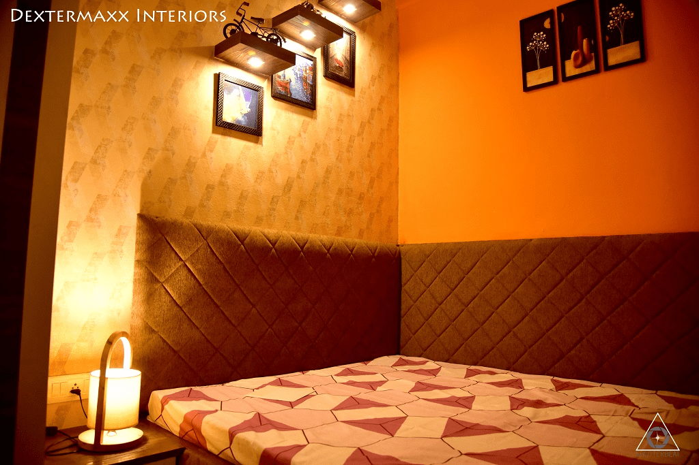
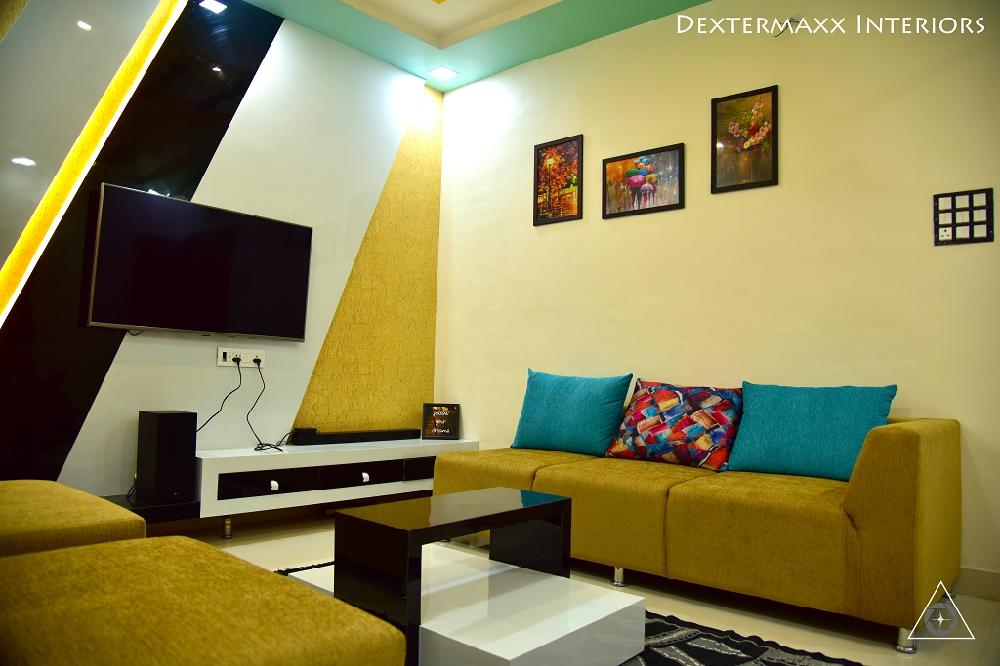
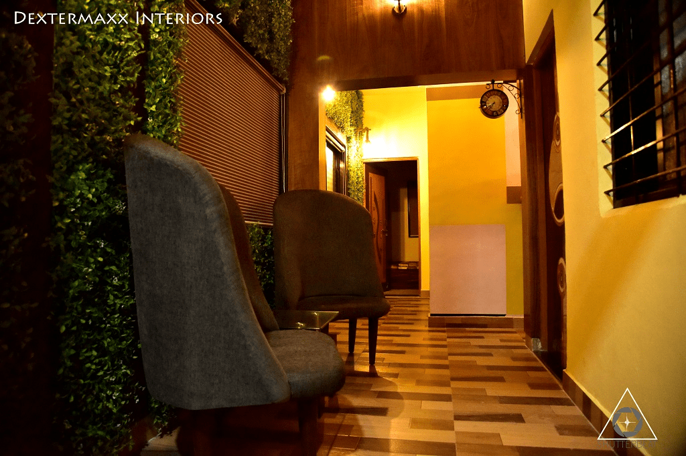

<div class="container project-view">
    
	<div class="row">
        <div class="col-md-8 project-images">
            
            
            
        </div>
        <div class="col-md-4">
            <div class="project-info">
                <h2>Eco Green Interior</h2>

                

                <p>What is green or “eco-friendly” interior design?” Green or eco-friendly interior design focuses on improving indoor air quality as well as reducing the impact that furniture purchases have on the environment.</p>

                <p>
                    <h4>Our Solutions</h4>
                   Eco-Friendly Interior Designing is the minimizing the resources involved in construction and taking up eco-friendly materials with emphasis on the health and environmental impact of the same. The benefits of green interior design comes include low maintenance cost, better air quality, energy efficiency, better waste management and low exposure to toxic material.
                </p>
                </p>
                        
                        
            </div>
        </div>
    </div>
</div>
